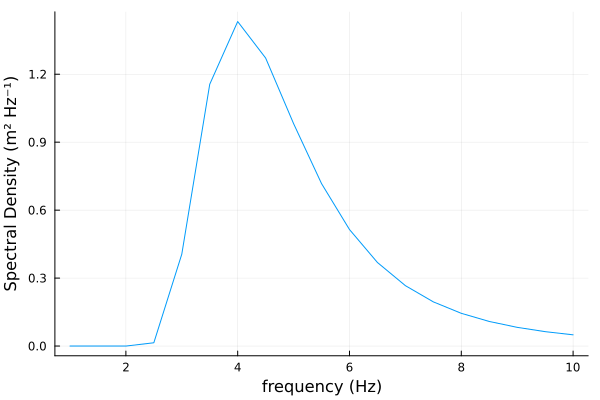

Quickstart
Introduction
You can quickly construct a Spectrum by passing a matrix and two axes with units. The axes can both be spectral variables for a cartesian spectrum or only one is a direction for a polar spectrum. Alternatively, you can download recorded spectra in the NDBC database through the use of a package like BuoyData.jl.
julia> using WaveSpectra, DimensionfulAngles
julia> f = (6:6:18) * Hz
(6:6:18) Hz
julia> Θ = (120:120:360) * °
(120:120:360)°
julia> S = Spectrum(ones(Float64, (3, 3)) * m^2/Hz/°, f, Θ)
3×3 Spectrum{m² °⁻¹ Hz⁻¹}{Hz}{°}
Spectral density of the quantity (m²) with polar coordinates:
• Axis 1: Frequency (Hz)
• Axis 2: Direction (°)
and data(m² °⁻¹ Hz⁻¹):
1.0 1.0 1.0
1.0 1.0 1.0
1.0 1.0 1.0Unit Compatibility
DimensionfulAngles extends the functionality of Unitful quantities to angles and this package uses that functionality to ensure consistency when dealing with wave spectra. In scenarios where the user is working with multiple spectra, this package will handle conversions when appropriate and will notify the user when otherwise incompatible. The Unitful uconvert function has been extended to work with spectra and an example is shown below.
julia> using WaveSpectra, DimensionfulAngles
julia> f = (6:6:18) * Hz
(6:6:18) Hz
julia> Θ = (120:120:360) * °
(120:120:360)°
julia> S1 = Spectrum(ones(Float64, (3, 3)) * m^2/Hz/°, f, Θ)
3×3 Spectrum{m² °⁻¹ Hz⁻¹}{Hz}{°}
Spectral density of the quantity (m²) with polar coordinates:
• Axis 1: Frequency (Hz)
• Axis 2: Direction (°)
and data(m² °⁻¹ Hz⁻¹):
1.0 1.0 1.0
1.0 1.0 1.0
1.0 1.0 1.0
julia> S2 = uconvert(m^2, Hz, rad, S1)
3×3 Spectrum{m² Hz⁻¹ rad⁻¹}{Hz}{rad}
Spectral density of the quantity (m²) with polar coordinates:
• Axis 1: Frequency (Hz)
• Axis 2: Direction (rad)
and data(m² Hz⁻¹ rad⁻¹):
57.29577951308232 57.29577951308232 57.29577951308232
57.29577951308232 57.29577951308232 57.29577951308232
57.29577951308232 57.29577951308232 57.29577951308232The accepted spectral-variables types are temporal/spatial, frequency/period, and linear/angular combinations. Represented as a diagram below:

Basic Functionality
This package also includes a few functions to several spectral parameters for directional and omnidirectional wave spectra; calculate the mean direction for the former and moments for the latter.
julia> using WaveSpectra, AxisArrays, DimensionfulAngles
julia> f = (6:6:18) * Hz
(6:6:18) Hz
julia> Θ = (120:120:360) * °
(120:120:360) °
julia> A = AxisArray(Float64.([x+y for x in 0:2, y in 0:2]) * m^2/Hz/°, f, Θ)
2-dimensional AxisArray{Unitful.Quantity{Float64, 𝐋² 𝐓 𝐀⁻¹, Unitful.FreeUnits{(°⁻¹, Hz⁻¹, m²), 𝐋² 𝐓 𝐀⁻¹, nothing}},2,...} with axes:
:row, (6:6:18) Hz
:col, (120:120:360)°
And data, a 3×3 Matrix{Unitful.Quantity{Float64, 𝐋² 𝐓 𝐀⁻¹, Unitful.FreeUnits{(°⁻¹, Hz⁻¹, m²), 𝐋² 𝐓 𝐀⁻¹, nothing}}}:
0.0 m² °⁻¹ Hz⁻¹ 1.0 m² °⁻¹ Hz⁻¹ 2.0 m² °⁻¹ Hz⁻¹
1.0 m² °⁻¹ Hz⁻¹ 2.0 m² °⁻¹ Hz⁻¹ 3.0 m² °⁻¹ Hz⁻¹
2.0 m² °⁻¹ Hz⁻¹ 3.0 m² °⁻¹ Hz⁻¹ 4.0 m² °⁻¹ Hz⁻¹
julia> S = Spectrum(A)
3×3 Spectrum{m² °⁻¹ Hz⁻¹}{Hz}{°}
Spectral density of the quantity (m²) with polar coordinates:
• Axis 1: Frequency (Hz)
• Axis 2: Direction (°)
and data(m² °⁻¹ Hz⁻¹):
0.0 1.0 2.0
1.0 2.0 3.0
2.0 3.0 4.0
julia> WaveSpectra.Moments.mean_direction(S)
-79.10660535086907°julia> S_omni = OmnidirectionalSpectrum((1.0:3.0) .* m^2/Hz, (1.0:3.0) .* Hz)
3-element OmnidirectionalSpectrum{m² Hz⁻¹}{Hz}
Spectral density of the quantity (m²):
• Axis: Frequency (Hz)
and data(m² Hz⁻¹):
1.0
2.0
3.0
julia> WaveSpectra.Moments.significant_waveheight(S_omni)
8.0 m
julia> WaveSpectra.Moments.energy_frequency(S_omni)
2.0 HzExtra Functionality
This package also includes extra functions to normalize spectra as well as generate omnidirectional parametric spectra. An example of the Pierson-Moskowitz spectra is shown below.
julia> f = (1.0:0.5:10.0) .* Hz;
julia> PM = WaveSpectra.ParametricSpectra.spectrum_pierson_moskowitz(f, 8.0 * m, 4.0 * Hz, peak_frequency=true)
19-element OmnidirectionalSpectrum{m² Hz⁻¹}{Hz}
Spectral density of the quantity (m²):
• Axis: Frequency (Hz)
and data(m² Hz⁻¹):
1.3423912370794646e-72
4.849071845233627e-13
0.001701611389553719
0.335309891337633
1.3421276585162367
1.6633580565889663
⋮
0.08116740160851418
0.0604917892588704
0.045764352079589225
0.035103816684478595
0.02727015323859412
julia> plot(PM)